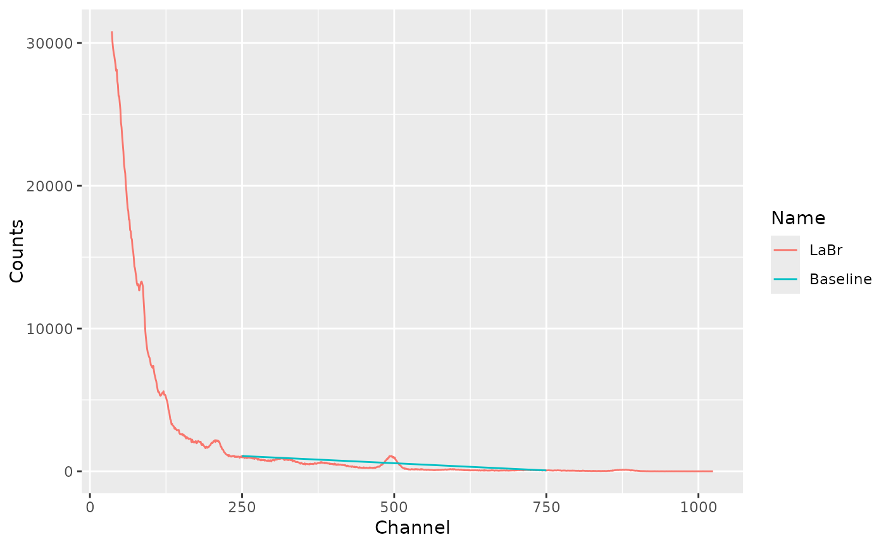
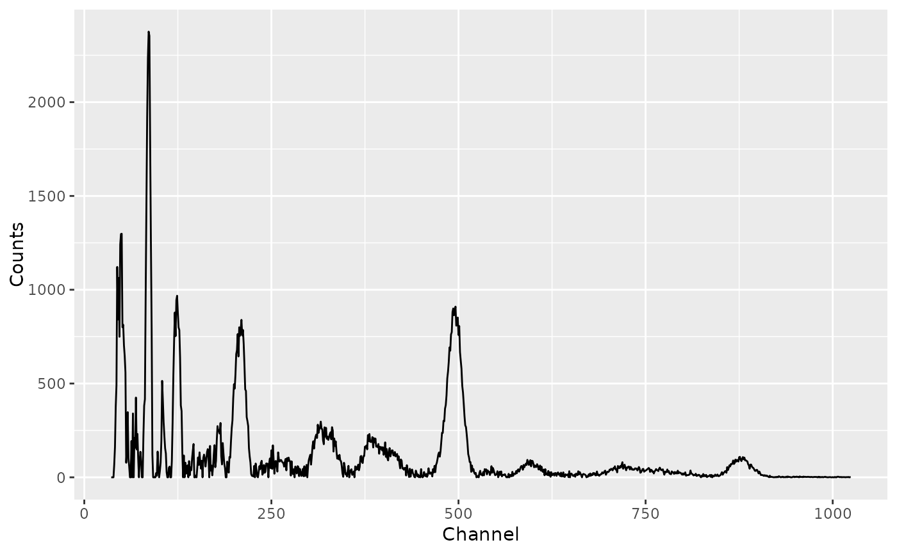
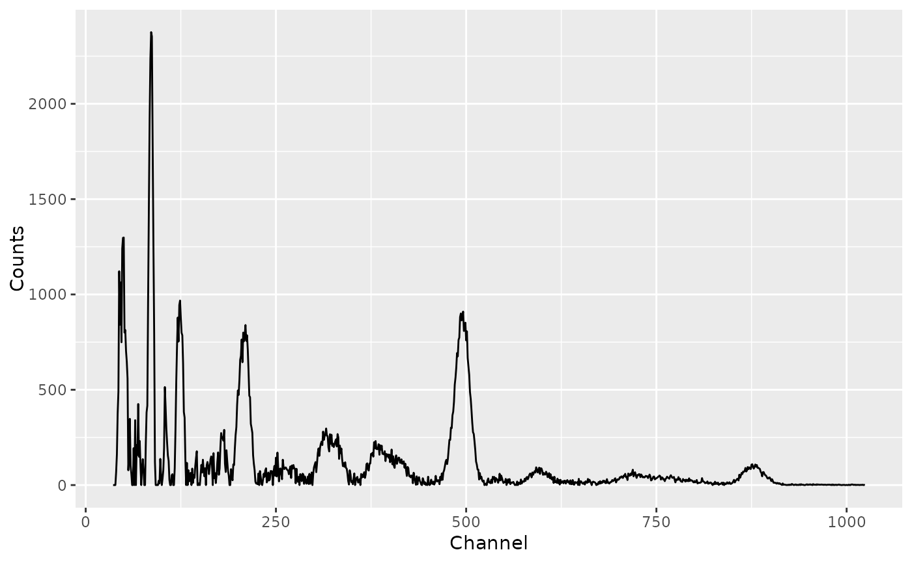

Baseline Estimation and Removal
Source:R/AllGenerics.R, R/baseline.R, R/baseline_linear.R, and 2 more
baseline.RdBaseline Estimation and Removal
Usage
signal_baseline(object, ...)
signal_correct(object, ...)
baseline_snip(object, ...)
baseline_rubberband(object, ...)
baseline_linear(object, ...)
# S4 method for GammaSpectrum
signal_baseline(object, method = c("SNIP", "rubberband", "linear"), ...)
# S4 method for GammaSpectra
signal_baseline(object, method = c("SNIP", "rubberband", "linear"), ...)
# S4 method for GammaSpectrum
signal_correct(object, method = c("SNIP", "rubberband", "linear"), ...)
# S4 method for GammaSpectra
signal_correct(object, method = c("SNIP", "rubberband", "linear"), ...)
# S4 method for GammaSpectrum
baseline_linear(object, from = NULL, to = NULL)
# S4 method for GammaSpectra
baseline_linear(object, from = NULL, to = NULL)
# S4 method for GammaSpectrum
baseline_rubberband(object, noise = 0, spline = TRUE, ...)
# S4 method for GammaSpectra
baseline_rubberband(object, noise = 0, spline = TRUE, ...)
# S4 method for GammaSpectrum
baseline_snip(object, LLS = FALSE, decreasing = FALSE, n = 100, ...)
# S4 method for GammaSpectra
baseline_snip(object, LLS = FALSE, decreasing = FALSE, n = 100, ...)Arguments
- object
A GammaSpectrum or GammaSpectra object.
- ...
Extra parameters to be passed to further methods.
- method
A
characterstring specifying the method to be used for baseline estimation (see details). Any unambiguous substring can be given.- from
An
integergiving the first channel to be used for linear interpolation. IfNULL(the default), channel \(1\) is used. Only used ifmethodis "linear".- to
An
integergiving the last channel to be used for linear interpolation. IfNULL(the default), channel \(max\) is used. Only used ifmethodis "linear".- noise
A length-one
numericvector giving the noise level. Only used ifmethodis "rubberband".- spline
A
logicalscalar: should spline interpolation through the support points be used instead of linear interpolation? Only used ifmethodis "rubberband".- LLS
A
logicalscalar: should the LLS operator be applied onxbefore employing SNIP algorithm? Only used ifmethodis "SNIP".- decreasing
A
logicalscalar: should a decreasing clipping window be used? Only used ifmethodis "SNIP".- n
An
integervalue giving the number of iterations. Only used ifmethodis "SNIP".
Value
baseline_*()returns a BaseLine object.signal_correct()returns a corrected GammaSpectrum or GammaSpectra object (same asobject).
Details
The following methods are available for baseline estimation:
SNIPSensitive Nonlinear Iterative Peak clipping algorithm.
rubberbandA convex envelope of the spectrum is determined and the baseline is estimated as the part of the convex envelope lying below the spectrum. Note that the rubber band does not enter the concave regions (if any) of the spectrum.
linearLinear baseline estimation.
References
Liland, K. H. (2015). 4S Peak Filling - baseline estimation by iterative mean suppression. MethodsX, 2, 135-140. doi:10.1016/j.mex.2015.02.009 .
Morháč, M., Kliman, J., Matoušek, V., Veselský, M. & Turzo, I. (1997). Background elimination methods for multidimensional gamma-ray spectra. Nuclear Instruments and Methods in Physics Research Section A: Accelerators, Spectrometers, Detectors and Associated Equipment, 401(1), p. 113-132. doi:10.1016/S0168-9002(97)01023-1
Morháč, M. & Matoušek, V. (2008). Peak Clipping Algorithms for Background Estimation in Spectroscopic Data. Applied Spectroscopy, 62(1), p. 91-106. doi:10.1366/000370208783412762
Ryan, C. G., Clayton, E., Griffin, W. L., Sie, S. H. & Cousens, D. R. (1988). SNIP, a statistics-sensitive background treatment for the quantitative analysis of PIXE spectra in geoscience applications. Nuclear Instruments and Methods in Physics Research Section B: Beam Interactions with Materials and Atoms, 34(3), p. 396-402. doi:10.1016/0168-583X(88)90063-8
See also
Other signal processing:
peaks_find(),
peaks_search(),
signal_integrate(),
signal_slice(),
signal_split(),
signal_stabilize(),
smooth()
Examples
## Import a CNF file
spc_file <- system.file("extdata/LaBr.CNF", package = "gamma")
spc <- read(spc_file)
## Remove the first 35 channels
spc <- signal_slice(spc, -c(1:35))
## Linear baseline
bsl_linear <- baseline_linear(spc, from = 250, to = 750)
plot(spc, bsl_linear)

## SNIP baseline
bsl_snip <- baseline_snip(spc, LLS = FALSE, decreasing = FALSE, n = 100)
plot(spc, bsl_snip)
 ## Rubberband baseline
bsl_rubber <- baseline_rubberband(spc)
plot(spc, bsl_rubber)
## Rubberband baseline
bsl_rubber <- baseline_rubberband(spc)
plot(spc, bsl_rubber)
 ## Remove baseline
spc_clean1 <- signal_correct(spc)
spc_clean2 <- spc - bsl_snip
all(spc_clean1 == spc_clean2)
#> [1] TRUE
plot(spc_clean1)

## Remove baseline
spc_clean1 <- signal_correct(spc)
spc_clean2 <- spc - bsl_snip
all(spc_clean1 == spc_clean2)
#> [1] TRUE
plot(spc_clean1)
